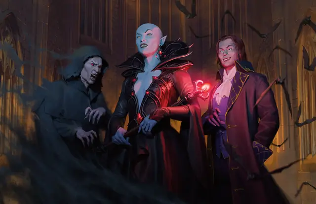

Вампир, повелитель теней
Vampire Umbral Lord
Средняя или Маленькая Нежить, Принципиальная Злая

Класс Защиты 16 Инициатива +14 (24)
Хиты 187 (22к8 + 88)
Скорость 40 футов, Полёта 40 футов (парит), Лазания 40 футов
| мод | спас | ||
|---|---|---|---|
| СИЛ | 20 | +5 | +10 |
| ЛОВ | 18 | +4 | +9 |
| ТЕЛ | 18 | +4 | +4 |
| мод | спас | ||
|---|---|---|---|
| ИНТ | 19 | +4 | +4 |
| МДР | 16 | +3 | +8 |
| ХАР | 21 | +5 | +10 |
Иммунитеты Некротический, Холод; Истощение, Очарованный
Чувства пассивное Восприятие 23, Слепое зрение 120 футов
Языки Общий
Опасность 15 (13 000 опыта или 15 000 опыта в Логове; БВ +5)
Особенности
Легендарное сопротивление (3/день, или 4/день в Логове). Если вампир проваливает спасбросок, он может вместо этого сделать его успешным.
Побег в тень. Если Хиты вампира опускаются до 0 за пределами места отдыха, он телепортируется в своё место отдыха, если только не находится в текущей воде или на солнечном свету. Если он не может телепортироваться, он уничтожается. Оказавшись внутри места отдыха, вампир Парализован на 1 час, по истечении которого он восстанавливает 1 Хит.
Слабости вампира. Вампир обладает следующими слабостями:
Запрет. Вампир не может войти в жилище без приглашения одного из обитателей.
Текущая вода. Вампир получает 20 урона Кислотой, если заканчивает свой ход в текущей воде.
Кол в сердце. Если оружие, наносящее Колющий урон, вонзить в сердце Недееспособного вампира в его месте отдыха, он становится Парализован, пока оружие не вынут.
Солнечный свет. Вампир получает 20 урона Излучением, если начинает свой ход на солнечном свету. Пока вампир на солнечном свету, он получает Помеху к броскам атаки и проверкам характеристик.
Действия
Мультиатака. Вампир совершает две атаки Замогильным ударом или Тошнотворным лучом в любой комбинации.
Замогильный удар. Бросок рукопашной атаки: +10, досягаемость 5 фт. Попадание: 9 (1к8 + 5) Рубящего урона плюс 13 (3к8) Некротического урона.
Тошнотворный луч. Бросок дальнобойной атаки: +10, дистанция 120 фт. Попадание: 16 (2к10 + 5) Некротического урона, и цель Отравлена до начала следующего хода вампира.
Голод Хадара (Перезарядка 5–6). Вампир сотворяет Голод Хадара (версия 5-го уровня), не нуждаясь в компонентах (заклинательная характеристика — Харизма, Сл спасброска заклинаний 18).
Бонусные действия
Кровавое истощение. Спасбросок Телосложения: Сл 18, одно существо, кроме Конструктов и Нежити, которое вампир видит в пределах 30 футов. Провал: 14 (4к6) Некротического урона. Максимум Хитов цели снижается на число, равное полученному урону, а вампир восстанавливает такое же количество Хитов.
Легендарные действия
У этого существа есть 3 использования Легендарных действий (или 4 использования в его Логове); оно может немедленно после окончания хода другого существа потратить одно использование, чтобы совершить одно из следующих действий. Существо восполняет все потраченные использования в начале каждого своего хода.
Обольщение. Вампир сотворяет Приказ, не нуждаясь в компонентах (заклинательная характеристика — Харизма, Сл спаброска заклинаний 18). Вампир не может совершить это действие повторно до начала своего следующего хода.
Удар из теней. Вампир перемещается на расстояние вплоть до половины своей Скорости и совершает одну атаку Замогильным ударом или Тошнотворным лучом.
Бонус мастерства +5
Среда обитания Город, Подземье
Сокровища Любые
Вампиры
Пьющие кровь владыки ночи
Вампиры скрывают свою проклятую бессмертную природу и выдают себя за живых, чтобы питаться их кровью. Самые младшие и кровожадные из них часто попадают в рабство к своим создателям, а невероятно хитрые и древние вампиры веками наслаждаются сверхъестественной властью над силами ночи.
Днём бессмертные создания скрываются в своих местах отдыха, недоступные для врагов и палящих солнечных лучей. Совершите бросок по таблице «Место отдыха вампира» для вдохновения или выберите сами мрачное место упокоения вампира.
Место отдыха вампира
| 1к6 | Место отдыха вампира находится… |
| 1 | Среди корней мёртвого дерева. |
| 2 | На дне затхлого пруда. |
| 3 | В гробу, наполненном могильной землёй. |
| 4 | В огромном сосуде с кровью или уксусом. |
| 5 | В недоступном для Гуманоидов пространстве. |
| 6 | Внутри скульптуры или комплекта доспехов. |
Повелители теней укрепляют свою связь с тьмой, посвящая себя служению зловещим силам в обмен на доступ к запретной магии.
Логова вампиров
Вампиры и повелители теней стараются держаться подальше от живых и создают свои убежища в тайных уголках мультикультурных городов или в заброшенных развалинах, где они обитали будучи живыми.
Местность, в которой находится логово вампира, изменяется из-за его присутствия, что создаёт следующие эффекты:
• Дети ночи. Вампир подчиняет себе животных в пределах своих владений. От заката до рассвета все Животные Среднего размера или меньше в пределах 1 мили от логова Очарованы.
• Надвигающиеся тени. Тени в пределах 1 мили от логова двигаются, словно живые. Любое существо, кроме вампира и его союзников, которое завершает Короткий отдых в пределах 1 мили от логова, должно пройти Спасбросок Мудрости Сл 15; при провале оно не получает преимуществ от этого отдыха.
• Туманы. Область в пределах 1 мили от логова окутывает стойкий ползучий туман. Видимость в этой области Слабо заслонена. Туман не воздействует на вампира и существ по его выбору.
Если вампир погибает или перемещает своё логово в другое место, все эти эффекты мгновенно исчезают.